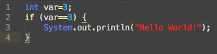

Die If-Anweisung dient dazu einen Ausdruck auszuwerten und je nach Ergebnis weiterzuverfahren.
Der Ausdruck muss dabei einen Wert vom Datentyp boolean haben.
Um If-Anweisungen wird man im kaum einen Programm herumkommen.
Das simple Konzept ist sehr mächtig und kann in den unterschiedlichsten Situationen eingesetzt werden.
Nun noch ein konkretes Beispiel zu der If-Anweisung. Im nachfolgenden Codestück soll überprüft werden ob die Integer
Variable var den Wert 3 besitzt. Gibt diese Anweisung ein true zurück, was im Beispiel der Fall ist, dann wird „Hello
World!“ auf dem Bildschirm ausgegeben.
